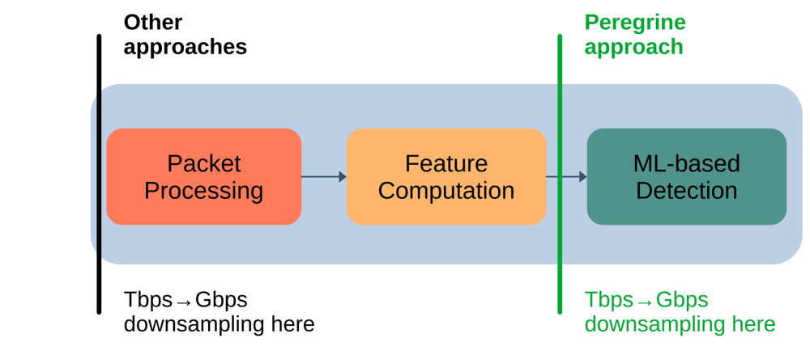

New Peregrine revision on arXiv
Our updated paper, Where to Sample: Rethinking ML-Based Malicious Traffic Detection at Terabit Scale, is now on arXiv. Peregrine computes ML features over all packets before sampling, preserving detection effectiveness while reducing the data sent to software inference.